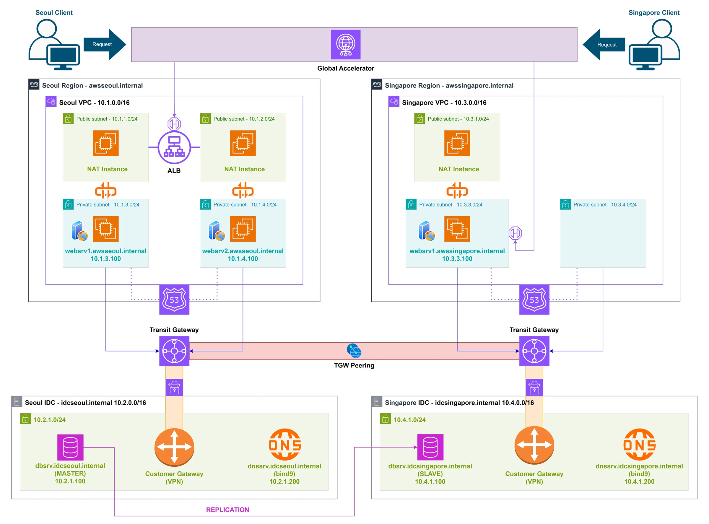
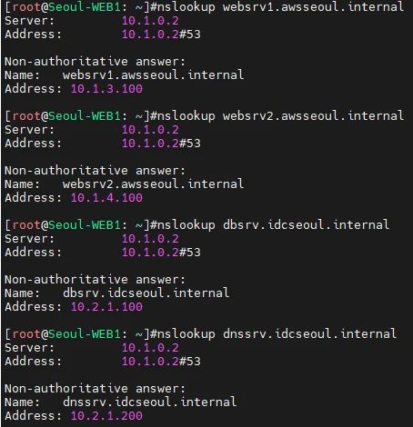
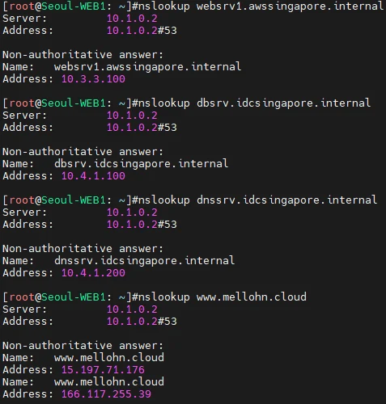
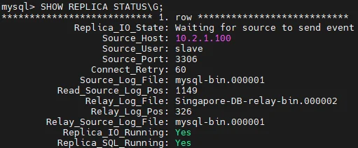
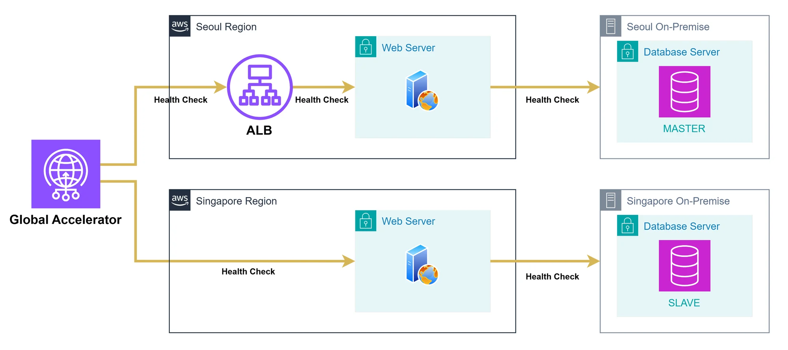
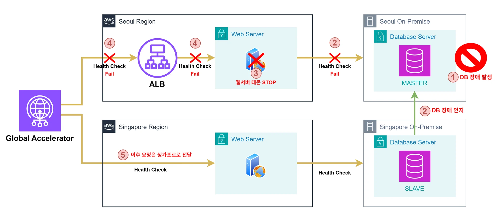
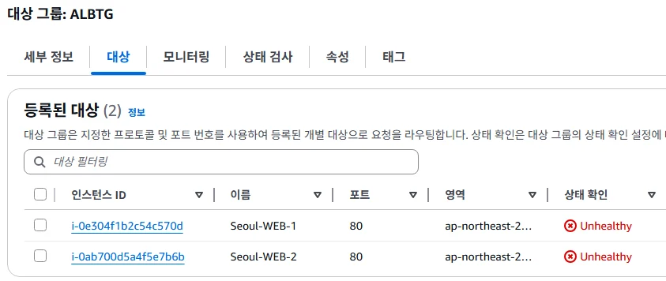

프로젝트 개요
클라우드 교육 과정에서 학습을 목적으로 시작해 혼자 설계하고 구축한 프로젝트다. 네트워크·DNS·VPN·데이터베이스를 하나씩 따로 다루는 것과, 그것들이 한 환경에서 맞물려 돌아가게 만드는 것은 다른 일이라고 봤다. 배운 것을 한곳에 모아 실제로 동작하는 상태까지 가보는 것이 목적이었다.
그래서 범위를 좁히지 않았다. 서울과 싱가포르 두 리전에 웹 서비스를 두고, 온프레미스를 가정한 별도 VPC(IDC)와 프라이빗하게 연결한 뒤, 한쪽이 멈췄을 때 다른 리전으로 넘어가는 것까지 하나의 환경 안에 넣었다.
요구사항은 세 가지였다. 각각을 어떤 서비스로 풀지부터 정하고 들어갔다.
고객 요구 → 설계 대응
| 요구사항 | 설계 대응 |
|---|---|
| 고가용성 — 각 리전에 웹서버를 둔다 | ALB + 웹서버 이중화 |
| 보안 통신망 — 리전·IDC 리소스 간 프라이빗 통신, 사설 도메인 운영 | Site-to-Site VPN · Transit Gateway · Route 53 |
| 트래픽 제어 — 점검 시 웹서버 제어, IDC 장애 시 다른 리전으로 전환 | Global Accelerator |
왜 IDC를 VPC로 만들었나
실제 데이터센터를 쓸 수 없으니 별도 VPC를 온프레미스로 간주하고, 그 VPC에만 Customer Gateway·자체 DNS·DB를 두어 AWS 서비스 없이 동작하게 했다. AWS 쪽과는 VPN 터널로만 통신하므로, 경로와 DNS 질의가 실제 하이브리드와 같은 방식으로 흐른다.
내가 담당한 것
단독 프로젝트라 아래 전부를 직접 구성했다.
- CloudFormation 템플릿 작성 — 서울 1개 · 싱가포르 1개
- 네트워크 — VPC·서브넷·라우팅·보안 그룹, Transit Gateway, Site-to-Site VPN
- 하이브리드 DNS — Route 53 프라이빗 호스팅 영역 · Resolver 엔드포인트·포워딩 규칙 · bind9
- NAT Instance — IP 포워딩 · iptables MASQUERADE 부팅 적용
- MySQL Master-Slave 복제 (서울 IDC ↔ 싱가포르 IDC)
- 리전 전환 스크립트 — 1분 주기 크론으로 DB 연결 확인 후 웹서버 제어
- 장애 주입 검증 — 양방향 전환·복구 확인
VPN 구성 범위
Customer Gateway 인스턴스의 IPsec 설정은 두 리전의 터널 IP·내부 IP·광고 대역에 맞게 값을 맞춰 적용했고, 터널 4개가 수립되는 것과 양방향 통신이 되는 것까지 확인했다.
아키텍처
Global Accelerator가 진입점이다. 리전 간은 Transit Gateway 피어링으로 잇고, 각 리전과 IDC는 Site-to-Site VPN으로 연결한다. 내부 도메인은 리전·환경마다 따로 두되 서로 조회되게 했다.

| 영역 | 대역 | 구성 |
|---|---|---|
| 서울 VPC | 10.1.0.0/16 | ALB · 웹서버 2대 · NAT Instance 2대(AZ 분리) |
| 싱가포르 VPC | 10.3.0.0/16 | 웹서버 1대 · NAT Instance 1대 |
| 서울 IDC | 10.2.0.0/16 | MySQL MASTER · bind9 · Customer Gateway |
| 싱가포르 IDC | 10.4.0.0/16 | MySQL SLAVE · bind9 · Customer Gateway |
동작 방식
하이브리드 DNS — 나누되 서로 찾게 한다
내부 도메인이 네 개다. AWS 쪽 둘(awsseoul.internal · awssingapore.internal)은
Route 53 프라이빗 호스팅 영역으로, IDC 쪽 둘(idcseoul.internal · idcsingapore.internal)은
bind9로 운영한다. 환경 성격이 다르니 DNS도 다르게 가져간 것이다.
문제는 나누기만 하면 서로를 못 찾는다는 점이었다. 그래서 양쪽에 길을 냈다.
| 방향 | 방법 |
|---|---|
| AWS → IDC · 상대 리전 | Route 53 Resolver 아웃바운드 엔드포인트 + 도메인별 포워딩 규칙 3개 |
| IDC → AWS · 상대 IDC | bind9 forward only zone 3개 → 상대 Resolver 인바운드 엔드포인트 / 상대 bind9 |
| IDC 내부 질의 | DHCP Options Set으로 해당 VPC의 DNS 서버를 bind9로 지정 |


같은 서울 웹서버 한 대에서 네 도메인이 모두 응답한다.
데이터 — 두 IDC 사이의 복제
복제는 리전 안이 아니라 리전을 건너서 이뤄진다.
서울 IDC의 MASTER(10.2.1.100)를 싱가포르 IDC의 SLAVE가 바라보고,
그 트래픽은 VPN과 Transit Gateway 경로를 탄다.

리전 전환 — DB가 아니라 트래픽을 옮긴다
IDC DB에 장애가 나면 그 리전의 웹서버는 데이터를 못 읽는다. 그런데 웹서버 자체는 멀쩡하므로 헬스체크를 통과해 버린다. 정상으로 보이지만 쓸 수 없는 상태가 가장 곤란하다.
그래서 웹서버에서 1분 주기 크론으로 IDC DB에 ping을 보내고,
닿지 않으면 systemctl로 웹 데몬을 내린다.
그러면 ALB 대상그룹이 Unhealthy가 되고, Global Accelerator가 반대 리전으로 트래픽을 보낸다.
DB가 돌아오면 크론이 웹 데몬을 다시 올려 원래대로 복귀한다.
이건 DB 페일오버가 아니다
SLAVE를 MASTER로 승격시키는 로직은 넣지 않았다. 층위가 데이터베이스가 아니라 트래픽 라우팅이다 — “DB에 닿지 않는 리전으로는 사용자를 보내지 않는다”까지가 이 구성이 하는 일이다.


아웃바운드 — NAT Instance
프라이빗 서브넷의 아웃바운드는 관리형 게이트웨이 대신 NAT Instance로 처리했다.
인스턴스의 출발지·대상 확인을 끄고, IP 포워딩과 iptables MASQUERADE 규칙이
부팅 시 적용되도록 구성했다. 서울은 가용영역을 나눠 2대, 싱가포르는 1대다.
설계에서 판단한 것
환경 전체를 코드로 — 어디까지 템플릿에 넣을까
콘솔로 만들면 과제는 끝나지만 다시 세울 수 없다. 그래서 AWS VPC와 IDC VPC, 서브넷·라우팅·보안 그룹, ALB, Route 53 호스팅 영역과 Resolver 규칙, Transit Gateway, Customer Gateway와 VPN 연결까지 리전별 템플릿 하나에 담았다.
두 리전이 완전히 같지는 않다 — 서울은 ALB와 웹서버 2대, 싱가포르는 웹서버 1대라 템플릿도 리전별로 따로 썼다. 같은 파일을 두 번 돌리는 구조가 아니라, 각 리전을 코드로 다시 세울 수 있게 하는 것이 목표였다.
Transit Gateway 피어링과 Global Accelerator는 콘솔에서 연결했다. 두 리전·두 스택에 걸쳐 있어 한쪽 템플릿에 넣기 애매했던 부분이다.
NAT Gateway 대신 NAT Instance를 쓴 이유
관리형 게이트웨이는 시간 요금에 데이터 처리 요금이 따로 붙는 두 갈래 구조이고, 리전이 둘이라 NAT도 둘 이상 필요했다. 비용을 고려해 인스턴스로 올렸다.
다만 운영 환경이었다면 게이트웨이를 썼을 것이다. 아끼는 비용보다 장애 위험과 관리 부담이 크다.
DNS를 나눈 뒤에 생긴 일
환경 성격에 맞춰 Route 53과 bind9로 나눈 것까지는 자연스러웠다. 그런데 나누고 나니 AWS 웹서버가 IDC 도메인을 못 찾았다. 각자 자기 영역만 알고 있어서다.
Resolver 아웃바운드 엔드포인트에 도메인별 포워딩 규칙을 걸고, bind9에도 forward zone을 두어 양방향으로 길을 냈다. 나누는 설계에는 잇는 설계가 따라붙어야 한다는 걸 여기서 배웠다.
검증
구성한 것이 실제로 동작하는지 단계별로 확인했다. 특히 장애 전환은 직접 DB를 멈춰 보고 확인했다.
| 확인한 것 | 방법 · 결과 |
|---|---|
| VPN 터널 | 양 리전 터널 4개 수립 확인 |
| 내부 통신 | nslookup·ping으로 리전 ↔ IDC 간 내부 도메인 조회 및 도달 확인 |
| DB 복제 | SHOW REPLICA STATUS IO/SQL 모두 Running, 한쪽 수정이 양쪽에 반영 |
| GA 라우팅 | 접속 위치를 바꿔가며 지연 기반 분배 결과 확인 |
| 장애 전환 | IDC DB 중지 → 웹서버 Unhealthy → 반대 리전 전환 → DB 복구 → 원복까지 양방향 |

남은 한계 — 이 구성이 못 잡는 것
ping은 호스트 도달만 본다. 서버는 살아 있는데 MySQL 프로세스만 죽은 경우는 감지하지 못한다. 포트 확인이나 쿼리 한 번으로 바꾸는 편이 맞다.
그리고 크론 주기가 1분이라 감지까지 시간이 걸린다. 실제 운영이라면 이 지연이 그대로 장애 시간이 된다.
RESULT
성과
- 내부 도메인
- 리전·환경을 가로질러 양방향 조회
- VPN 터널
- 양 리전 ↔ IDC 수립 및 통신 확인
- 장애 전환
- DB 중지 → 전환 → 복구까지 직접 확인
- IaC 범위
- 네트워크·DNS·VPN까지 코드로 정의
4개
4개
양방향
환경 전체
산출물
이 화면 크기에서는 미리보기 대신 다운로드로 확인해 주세요.
레포에는 CloudFormation 템플릿 2개와 리전 전환 스크립트를 올렸다.
root 비밀번호와 VPN 사전공유키는 NoEcho 파라미터로 빼 스택 생성 시 입력받게 했다.
VPN 터널 설정은 포함하지 않아 템플릿만으로 전체가 재현되지는 않는다.
기술 스택
단독 프로젝트라 아래 전부를 직접 구성했다.
| 영역 | 기술 |
|---|---|
| IaC | CloudFormation — 리전별 템플릿 2개 |
| 네트워크 | VPC · 서브넷 · 라우팅 · 보안 그룹 · ALB · Transit Gateway · Site-to-Site VPN · Customer Gateway · Global Accelerator |
| DNS | Route 53 프라이빗 호스팅 영역 · Route 53 Resolver(인바운드·아웃바운드 · 포워딩 규칙) · bind9 · DHCP Options |
| 컴퓨트 | EC2 · NAT Instance(IP 포워딩 · iptables MASQUERADE) |
| 데이터 | MySQL — Master-Slave 복제 (IDC 간) |
| 운영 | Linux · systemd · crontab · Apache httpd |
용어집
약어 정리.